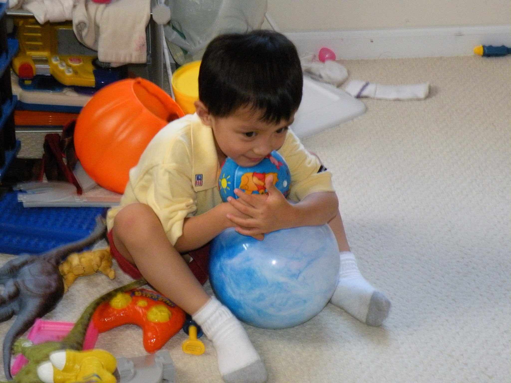

Interview
Age: 4
(Interview with Mom)- Sharing is good, right?
- Oh, not this again.
- Explain your memory of that phrase.
- See, I was eating Kit-Kat your brother brought home from school. And I had it all to myself. Until you came in.
- Go on.
- So, you probably heard me unwrapping it, and you wanted some, naturally. So you came up to me, and you asked me "Mommy, sharing is good, right?" I wanted to set a good example, so I told you "Yes, sharing is good." Because why would I say otherwise? Then you asked me, "Will you share with me?" And of course, because I just told you sharing was good, I couldn't say no. You made me dig my own hole!
- For the record, can you say what happened after?
- Once you took a bite, I asked you "David, sharing is good, right?" And you just hugged the Kit-Kat close to you and wouldn't let me take it back. Before I knew it, you had eaten the whole thing.
- Do you think I was a bad kid? Would you say I had morals? Did I know what I was doing was wrong?
- You obviously knew right and wrong. But you obviously didn't care about right and wrong. Only about the chocolate. [In Chinese:] Naughty little boy.
Kohlberg's Commentary
Children typically operate by preconventional morality, and this child is no different. It is evident that this child was operating in the Personal Reward stage, as he had no regard for right or wrong, despite knowing the difference between them. Rather, he made his decision based on personal gain - in this case, the chocolate. After obtaining the reward, he once more disregarded right and wrong in favor of keeping his prize.
